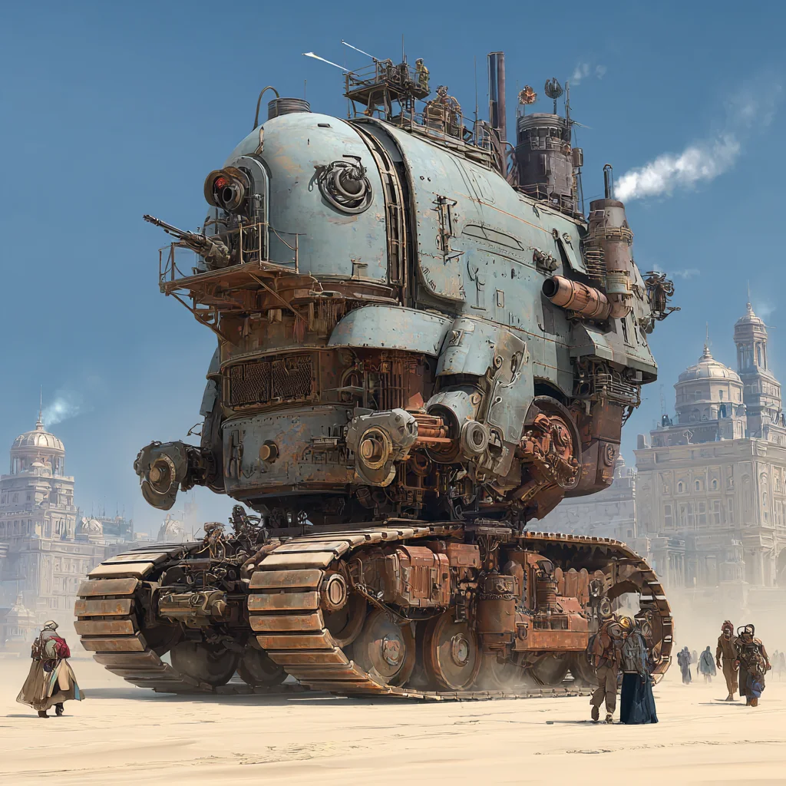

The one-line twist
🫀
Every survival game puts the health bar on the hero. BOILERHEART moves it onto the machine. Hull, boiler pressure, coolant, fuel, oil, crew nerves — those are the stats you're bleeding and defending. The player is just the crew keeping the beast alive long enough to reach the next town.
The world
An empire at war, and machines that learned to think
Steampunk sci-fi: somewhere along the line, steam-driven machines were built well enough that they actually think — and talk. The empire is at war, and you run a crew aboard a hulking land-dreadnought: part tank, part home, part cranky old soul.
You'll cross a war-torn frontier, roll into small towns to barter for supplies and parts, take missions from Command (and from anyone else with coin), and get dragged into battles you may or may not have wanted. Between all of it, you keep the machine running — because if it dies, the run is over.

Where the AI actually lives
Three LLMs, three completely different jobs
This is the reason the pitch exists — and why it's a clean thing to teach. Each role is a different, self-contained way to wire a language model into a game, and each could be built and demoed on its own.
🛞
Role 1 · Character voice
The Machine
The dreadnought speaks for itself — a big rustbucket prima donna with opinions, moods, and vices. It can get hooked on the good stuff: premium oils, top-grade coal, luxuries it does not strictly need. Indulge it and morale/performance soar; ration it and it sulks, stalls, or "forgets" to do things well.
"I'll go faster when I've had the good oil. Not the swill you bought in the last town. I have a reputation."
🧑🔧
Role 2 · Living NPCs
The Crew
Named people live aboard — gunners, a mechanic, a quartermaster, passengers you're ferrying. You can actually talk to them. They have loyalties and secrets, and on some runs one of them is a traitor. Relationships shift based on how you run the ship and who you feed the good oil to.
"You gave the boiler the last of the coal again. The crew notices things like that."
🎲
Role 3 · Procedural GM
The Game Master
A director LLM is fed loose, modular fragments — an order, a complication, a betrayal, an ambush — and must weave them into one coherent mission on the fly, with cause and effect that hangs together. No two runs assemble the same story.
Input: "exfil a spy · traitor aboard · spy refuses to leave · raider ambush on the way home" → a mission.
The killer demo
Watch the Game Master build a mission
Hand the director a fistful of fragments. It returns a mission with motives, order, and stakes — the kind of thing a human GM improvises at the table. Here's your exact example, assembled:
Fragments in
ORDER Command: exfiltrate a spy
TWIST a traitor is aboard
SNAG the spy won't come willingly
AMBUSH raiders on the route home
PLACE return to Forward Operating Base
Mission out
Command signals the Dowager: pull an imperial spy out of an occupied border town before dawn. Simple exfil — except when you reach her, she refuses to board: her brother is still inside the town's work-camp and she won't leave without him, so the crew has to solve that before she'll climb aboard. Meanwhile someone on your own deck has been feeding your route to the enemy — a traitor whose tip sets up a raider ambush in the canyon on the way back to the Forward Operating Base. Get everyone home and you might still not know which of your crew sold you out.
Underlined beats are the fragments, welded into one story by the GM. Swap any chip and the mission re-weaves.
Minute to minute
The core loop
01
Travel
Cross the frontier. Route choices trade speed for fuel, cover, and danger.
02
Arrive & barter
Roll into a town. Trade for coal, oils, parts, and rumors. The machine wants luxuries.
03
Take a mission
The GM weaves the next job from fresh fragments. Crew weigh in.
04
Fight / resolve
Battles and dilemmas chew through the machine's stats — and the crew's nerves.
05
Maintain
Patch, cool, re-pressure, upgrade. The repair puzzles are the survival layer.
06
Push on
Limp or thunder to the next town. Loop tightens as the war closes in.
Survival, relocated
Maintenance is the survival system
Because the stats live on the machine, "staying alive" means engineering. Repair and upgrade are puzzles — reroute steam, balance pressure, swap a cracked plate under fire — and the resources you barter for in town are what keep the needles out of the red.
🔩Hull integrity
Soaks damage. Cracks become leaks become failures.
🌡️Boiler pressure
Your "stamina." Too low you stall, too high you burst.
💧Coolant
Buys you sustained fights before the core overheats.
🛢️Fuel & oil
Range and smoothness — and the machine's little addiction.
🫂Crew nerves
Morale under strain. Fed, rested crews perform; frayed ones make mistakes.
🧠Sanity
The machine's own nerve. Every battle grinds it down — let it drop too low and it turns manic, panicky, and unreliable.
🛋️
It's a war, and the machine feels it. So between fights you don't just patch the hull — you sit the old girl down and give her therapy: soothing words, a quiet berth, a treat of aromatic jasmine oil. "There there. The bad people can't hurt you now." Neglect her sanity and the finest engine in the empire will freeze up mid-battle out of sheer panic.
For the staff room
Why this is the one worth teaching
It's three lessons in a trenchcoat
- Character voice — persistent personality + state (the machine). One prompt-design lesson.
- Conversational NPCs — memory, loyalty, a hidden-role twist (the crew). One dialogue-systems lesson.
- Procedural GM — constrained generation from fragments (the director). One structured-output lesson.
It scales down cleanly
- Each role runs and demos on its own — students can own one module.
- The fantasy sells the tech: "the tank talks" is instantly legible to a class.
- Fragments-into-missions is a tidy, gradeable structured-output exercise.
- Nothing here needs a real game engine to prove — it can start as text.
If we greenlight it
What we'd build first — a teachable vertical slice
Small enough for a term, honest about scope:
- One town, one machine (the talking prima donna) with 6 live stats — including Sanity — and a working barter screen.
- The GM assembles one mission from a bank of ~6–8 fragments, and re-weaves it if you swap a fragment.
- Three crew members you can talk to; one is secretly the traitor for that run.
- A single maintenance puzzle (re-pressure the boiler) standing in for the whole survival layer.
- Text-first is fine — art and 3D come after the loop is proven fun.
Being honest
Unproven bits & open questions
- Keeping the GM coherent across a whole mission — fragments can weld into nonsense without good constraints.
- LLM cost & latency if the machine, crew, and GM are all "thinking" during play.
- Guardrails — an improvising GM and free-text crew need boundaries, especially with students.
- The prima-donna "addiction" mechanic is fun on paper; needs tuning so it's characterful, not just annoying.
- Nobody's shipped quite this — which is the exciting part and the risky part.